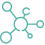

Заказ специального питания
здесь вы можете заказать продукты и составить индивидуальный план питания
по состоянию здоровья и образу жизни
Отметьте свои предпочтения по состоянию здоровья
шаг 1/3
Короновирус
выбрать все
коронавирус
коронавирус Дельта
Старение
выбрать все
здоровое старение
расстройство пищеварения
Здоровье мозга
выбрать все
эпилпсия
болезнь Альцгеймера
легкие когнетивные нарушения мозга
Онкология
выбрать все
онкология
Хирургия
выбрать все
энтеральное питание
серьезная хирургия
Дисфагия
выбрать все
дисфагия
Пищевая аллергия
выбрать все
аллергия на лактозу
аллергия на глютен
Здоровье кишечника
выбрать все
воспалительное заболевание кишечника
синдром раздраженного кишечника
Врожденные нарушения
обмена веществ

выбрать все
нарушение обмена веществ
Метаболическое здоровье
выбрать все
диабет
контроль веса
Педиатрия
выбрать все
детская дисфагия
рефлюкс
невралогические расстройства
церебральный паралич
заболевание ЖКТ
трудности с кормлением
задержка роста
муковисцедоз
продолжить